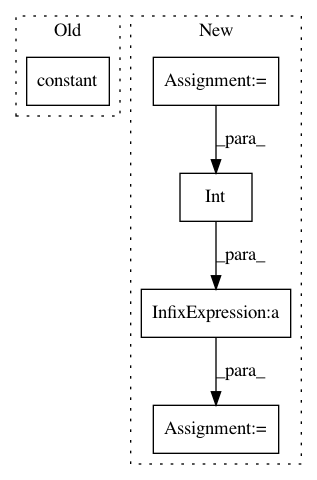

eddede8a34d5a25c5aadddd8a285df808cca1d91,onnx_tf/backends/backend_v2.py,TensorflowBackend,handle_split,#Any#Any#Any#,53
Before Change
@classmethod
def handle_split(cls, node, input_dict):
split = tf.constant(node.attrs["split"])
axis = node.attrs["axis"]
return list(tf.split(input_dict[node.inputs[0]], split, axis))
After Change
if "split" in node.attrs:
split = node.attrs["split"]
else:
per_part = x_shape[axis] / len(node.outputs)
assert int(per_part) == per_part
split = [int(per_part)] * len(node.outputs)
return list(tf.split(input_dict[node.inputs[0]], split, axis))
In pattern: SUPERPATTERN
Frequency: 3
Non-data size: 5
Instances
Project Name: onnx/onnx-tensorflow
Commit Name: eddede8a34d5a25c5aadddd8a285df808cca1d91
Time: 2018-04-11
Author: fumihwh@gmail.com
File Name: onnx_tf/backends/backend_v2.py
Class Name: TensorflowBackend
Method Name: handle_split
Project Name: onnx/onnx-tensorflow
Commit Name: eddede8a34d5a25c5aadddd8a285df808cca1d91
Time: 2018-04-11
Author: fumihwh@gmail.com
File Name: onnx_tf/backends/backend_v1.py
Class Name: TensorflowBackend
Method Name: handle_split
Project Name: NifTK/NiftyNet
Commit Name: 984d17836d7a6240942cd44f2f61c92a427bb9bb
Time: 2018-04-24
Author: z.eaton-rosen@ucl.ac.uk
File Name: niftynet/layer/crop.py
Class Name: CropLayer
Method Name: layer_op